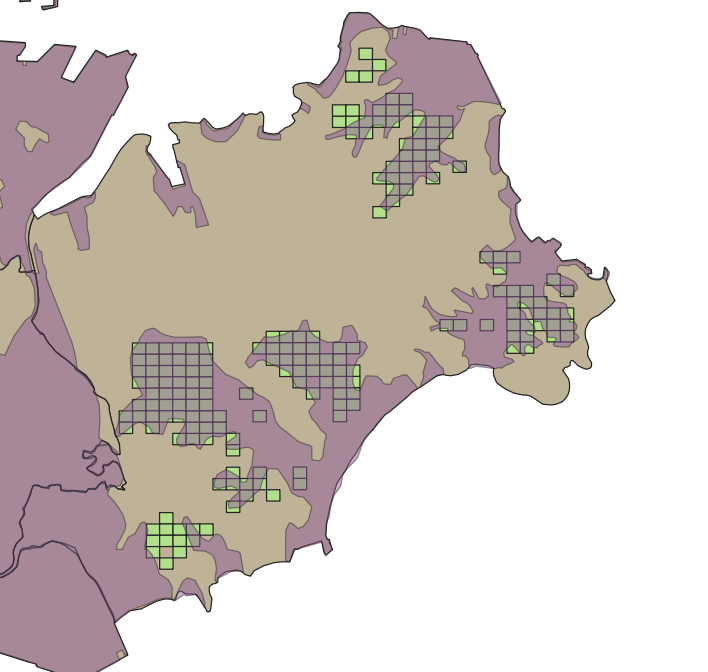

個別経営拡大と組織的担い手形成に着目して
東京農業大学
イントロダクション
観山 (2021)
復興政策の影響や、復興主体の異質性に焦点を当てた研究が見られる
宮城県S町を事例に、復興政策に対して各農業経営体が異なる反応を示した要因と、組織的担い手と個別経営体への農地集積が併存するに至った過程を明らかにする。
また、主に農林業センサスを用いて、S町で見られた現象の一般化可能性を探る。
宮城県S町における
農業復興プロセス
多くの農地が浸水。
代表的な復興交付金事業
C-1事業
C-4事業
とくに宮城県では両事業を通して効率的な農業への再編が目指されていた

注： 圃場位置は国土数値情報の2009年土地利用データを2次メッシュで表示。
津波浸水範囲は国土地理院「平成23年（2011年）東日本大震災2.5万分1浸水範囲概況図（宮城県版）」による。
S町の事例の一般化可能性
― センサスによる検討 ―
（内容）
おわりに
（内容）